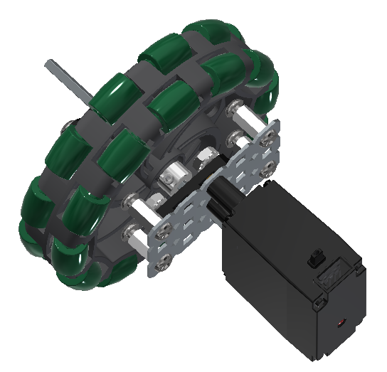

Modular motor plates: To reduce the time and effort needed to replace and diagnose drive motors, we use a modular 3x5 plate. Taking off a motor then requires removing six easily accessible hex screws. 
Diagonal drive template: The bot is designed to meet the size constraints only when diagonally placed in the sizing box. This allows us to A) Employ self-directed size/weight limits, and B) Allow more overall length for the lift bar system, and claw size.
Jam-nut standoffs: In an attempt to improve tower stability, we implemented four jam-nut standoffs, constructed from 2" standoffs and a pair of Keps nuts. These are placed near the bottom of the base.

Triangular strut: To improve tower stability, we implemented a triangular strut out of standoffs, 45-degree angle gussets, and three C-channels. Our aim is to make a structurally sound lift tower without using up a lot of space and weight.